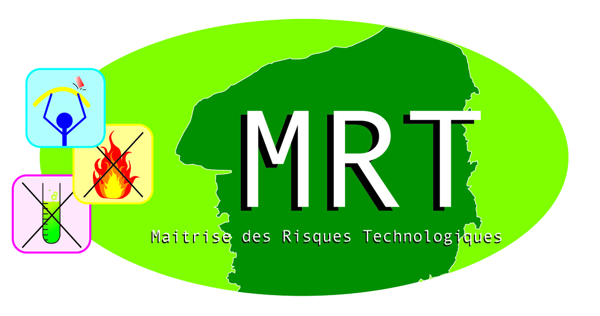
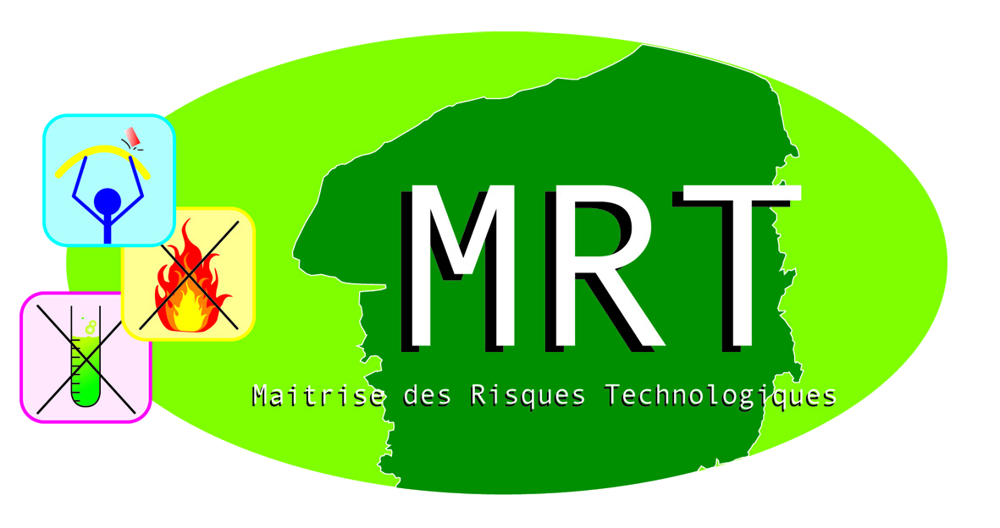
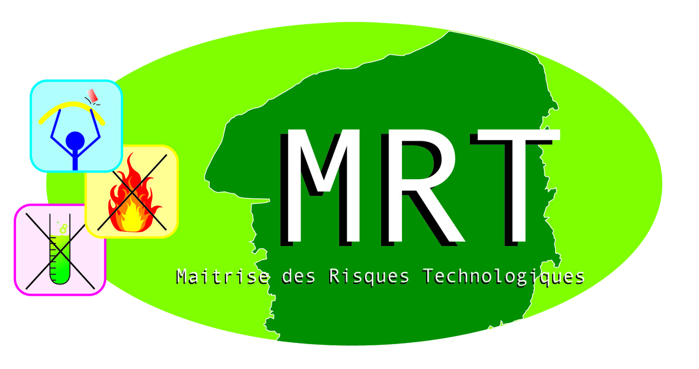
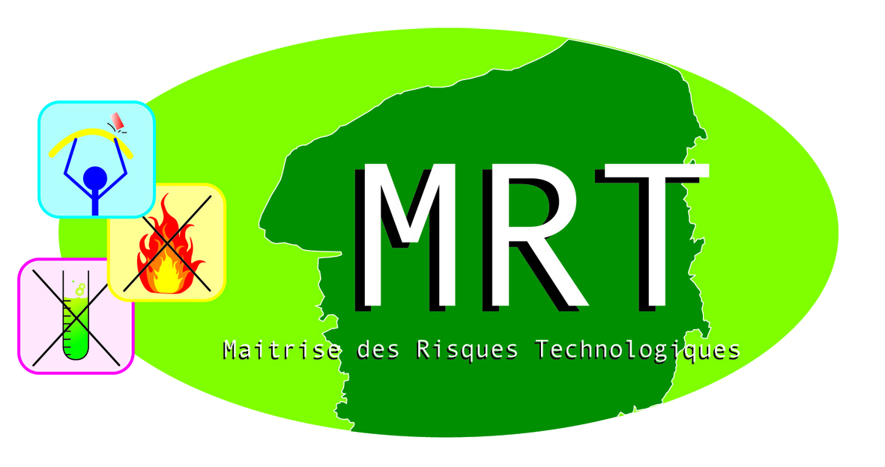

FIREDIAG
Maintien d'un système d'information en milieu difficile
Guilhelm Savin, LITIS

 

Guilhelm Savin, LITIS

 

produire de l'information
| Qui ? | Les sapeurs pompiers |
| Quoi ? | Aide à la décision |
| Comment ? | Système multi-capteurs |
Différentes sources : bâtiment, forces d'intervention
Exploitation des données :
| Veille | surveillance du bâtiment |
| Intervention | aide à la décision |
Localisation
Transmission | Latence
Validité | Quantité
Décomposée en trois parties :